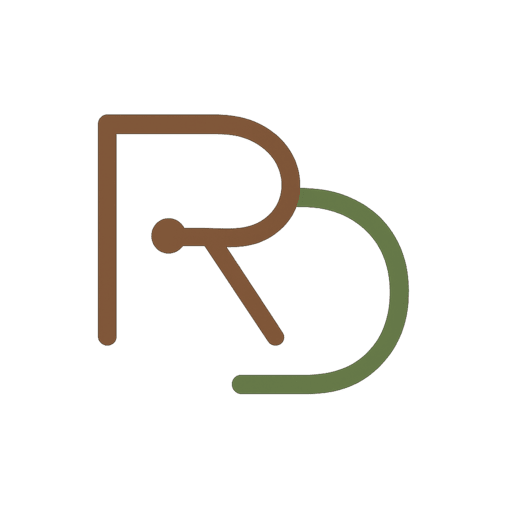

MS-AI student and AI platform engineer specializing in decentralized agentic systems. Gaining expertise in autonomous AI for mission-critical environments: space, ocean, and field operations.

Live Deployments
Built on decentralized infrastructure I developed at We Own AI
LLMfeed

llmfeed.ai
Advanced AI crypto trading platform with predictive modeling, automated backtesting, and real-time market signals for DeFi optimization
AI Consulting

romandid.xyz
Strategic agentic AI implementation and consulting for businesses looking to deploy intelligent agent systems and automation workflows
My Journey
My path into technology started with a computer science degree from CU Boulder. Early on, I discovered a passion for how different fields intersect, blending elegant design principles with the immersive experiences of gaming and the solid engineering of full-stack development. To me, these are not isolated skills but complementary parts of a whole. Crafting an intuitive user experience in a complex simulation shares the same core challenges as in a compelling game. My work building full-stack applications has given me a deep understanding of how to translate these ideas into reality, from database architecture to the final user interface.
AI in Action
This systems-level perspective is the foundation of my work in AI, where I focus on building and leading the development of agentic systems. It's a role that spans the full product lifecycle, from hands-on engineering and architecture to strategic leadership. At The Verse, for example, I led the AI product strategy for the WalkXR therapeutic platform by authoring the 0-to-1 roadmap for its multi-agent OS, designing the agentic framework with LangGraph, and engineering the core RAG system. A key part of this was developing a constitutional AI safety layer with an RLAIF/DPO loop for continuous model alignment.
My current work as an AI platform engineer at We Own AI expands on this foundation, where I build Kubernetes infrastructure with Helm and create reusable agentic playbooks for cloud-native automation. This infrastructure now powers my own ventures including LLMfeed, an AI crypto trading platform, and my AI consulting practice.
Future Focus
My work architecting agentic frameworks has clarified my trajectory toward leading autonomous systems research. The core principles of building systems that perceive, reason, and act are the same ones that drive the future of autonomy. I see a direct line from my experience with multi-agent systems and cloud infrastructure to the complex challenges in space, ocean, polar, and field environments, including autonomous navigation, intelligent reconnaissance, and sophisticated human-AI teaming.
In the near term, I'm seeking 2026 summer internships with labs focused on real-world AI deployment, where I can apply my platform engineering experience to mission-critical research. Long-term, my goal is to lead autonomous systems missions or research programs, combining my technical foundation in cloud-native AI with the advanced robotics and geospatial ML expertise I'm developing through my MS-AI program.
Education Goals
To bridge my current platform engineering expertise with research leadership, I am pursuing a Master of Science in Artificial Intelligence and a Graduate Certificate in Engineering Management at CU Boulder. This dual program provides me with the advanced technical knowledge in autonomy, robotics, and geospatial ML needed for cutting-edge research, while developing the strategic leadership and systems thinking skills essential for directing mission-critical projects. The specialized coursework directly prepares me for summer internships in real-world AI labs and my long-term goal of leading autonomous systems research in challenging environments.
Beyond Tech
Beyond my technical pursuits, I balanced my undergraduate studies as a D1 ACHA hockey player. I continue to enjoy staying active, whether it's on the ice, snowboarding, hiking, biking, or at the gym.
Technical Toolkit
Languages
Python, C++, JavaScript, R, SQL, HTML/CSS
ML & Data
PyTorch, scikit-learn, NumPy, Pandas, Matplotlib, MongoDB, MySQL, ChromaDB
LLMs & Agents
LangChain, LangGraph, LlamaIndex, Retrieval-Augmented Generation, Model Context Protocol, Ollama
Cloud & DevOps
Bash, Linux, Git, Docker, Kubernetes, Helm, GitHub Actions, Google Cloud, DigitalOcean, n8n
Product & Design Tools
Agile (Scrum, Kanban), PRDs, Jira, Notion, Figma, Miro, WordPress, Unreal Engine 5, NASA GMAT